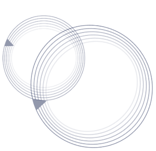

Además, en línea con nuestra estrategia centrada en los clientes, en 2023 desarrollamos una serie de herramientas y comunicaciones en torno al plan “calcula, mejora y resuelve” con el objetivo de empoderar a nuestros clientes para que tomen el control de su ahorro para el retiro y mejoren su pensión. Estas acciones buscan generar una cultura preventiva y concientizar tanto a los clientes de Afore SURA como a los trabajadores en general, sobre su pensión y la importancia de planificar su retiro con antelación.
Como reconocimiento al compromiso, la consistencia y la sofisticación de nuestro proceso de inversión, Standard & Poor’s otorgó a Afore SURA su máxima calificación ‘AMP-1’ (Muy Fuerte). Asimismo, obtuvimos la Clasificación Analista Morningstar Plata, la más alta otorgada por este grupo de análisis internacional; además, fuimos galardonados como “Fondo de Pensiones del año” en México por la revista The European, que reconoce la excelencia en la comunidad empresarial global.
Desde 2012 somos signatarios del Pacto Mundial de las Naciones Unidas y año tras año avanzamos en la integración de las mejores prácticas en materia de derechos humanos, estándares laborales, anticorrupción y medio ambiente en nuestra gestión empresarial. Cada una de nuestras iniciativas contribuyen al logro de los Objetivos de Desarrollo Sostenible (ODS). Como empresa de servicios financieros contribuimos particularmente al ODS 8 (Trabajo decente y crecimiento económico), aunque también impactamos positivamente en los ODS 3 (Salud y bienestar), 4 (Educación de calidad), 5 (Igualdad de género), 10 (Reducción de las desigualdades), 13 (Acción por el clima), y 16 (Paz, justicia e instituciones sólidas).

Durante 2023, a través de Fundación SURA, fortalecimos nuestras alianzas con diversas organizaciones de la sociedad civil para mejorar la calidad de vida de los mexicanos y de las poblaciones vulnerables, centrándonos en proyectos de desarrollo social que abarcan desde la educación hasta el fomento del arte y la cultura. En colaboración con 11 organizaciones presentes en 18 estados del país, logramos beneficiar a más de 51 mil personas de todas las edades.
El pilar fundamental de nuestra estrategia empresarial es el talento humano. Por ello, quiero reconocer el arduo trabajo y el compromiso de cada uno de los equipos que conforman Afore SURA. Durante todo el año 2023, su dedicación y colaboración fueron clave para ayudar a nuestros clientes a lograr un mejor retiro desde hoy.